La traducción de una pintura a una pieza real de tejido de cintura guatemalteco, y un concepto de negocio construido para conectar a artesanos tradicionales con diseñadores contemporáneos.
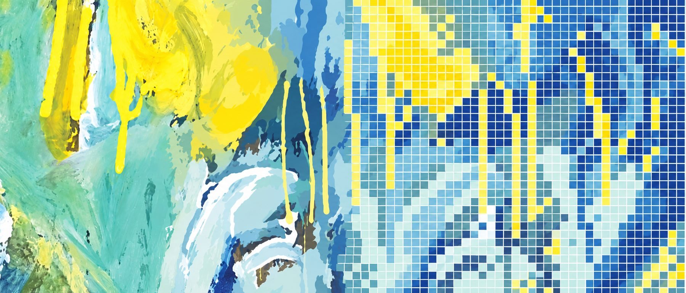
Los textiles guatemaltecos como el huipil y el tzute se tejen en un telar de cintura: un sistema portátil con un extremo atado a un punto fijo y el otro alrededor de la cintura de la tejedora, de modo que ella controla la tensión con su propio cuerpo en lugar de un marco fijo. Es una técnica que se transmite directamente, de mujer a mujer, y así es como se sigue haciendo la mayor parte hoy en día.
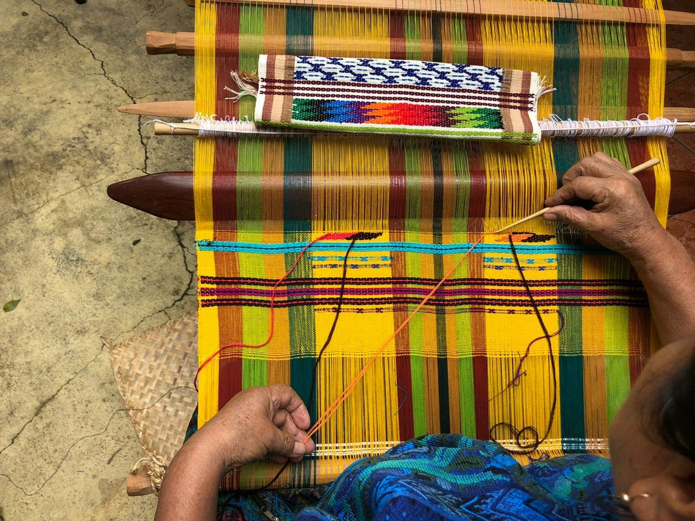
Una pieza en proceso en el telar, la trama se trabaja hilera por hilera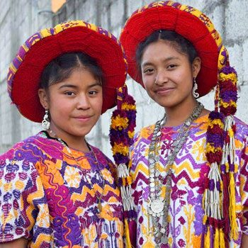
Huipiles que se usan hoy, el trabajo de patrones y color que mantiene viva la tradiciónCada vez menos personas aprenden a tejer. Las generaciones más jóvenes optan por jeans y camisetas en lugar de huipiles, y los patrones tradicionales se van perdiendo bajo la presión de la moda de consumo masivo. Tampoco ha habido mucho espacio para que el oficio innove en sus propios términos, lo que sigue reduciendo su mercado en lugar de hacerlo crecer. La mayoría de las tejedoras solo llegan al mercado local y a los turistas, sin un camino real hacia uno internacional.
Ya existen algunas marcas haciendo algo parecido en otros lugares, y vale la pena conocerlas antes de construir algo nuevo. Jan Kath es el modelo más cercano: un estudio alemán que manda a hacer alfombras anudadas a mano en Nepal y Pakistán, por personas que llevan generaciones haciendo alfombras tradicionales, pero diseña patrones contemporáneos para que las hagan, cosas como sus diseños de nubes y cielo, en lugar de solo motivos tradicionales. Es la misma idea que busco: la calidad y el oficio de una técnica tradicional, combinados con un lenguaje de diseño realmente actual.
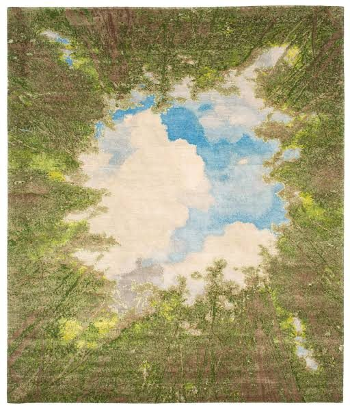
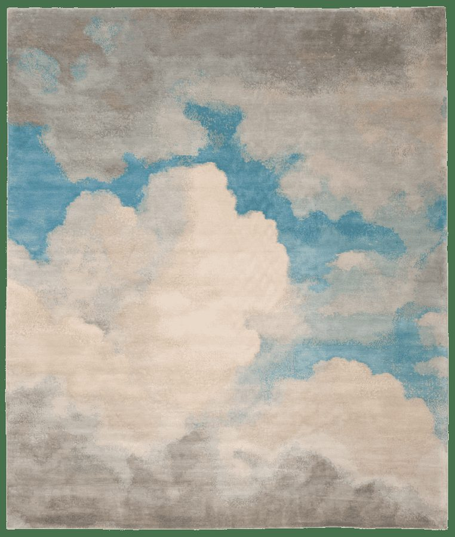
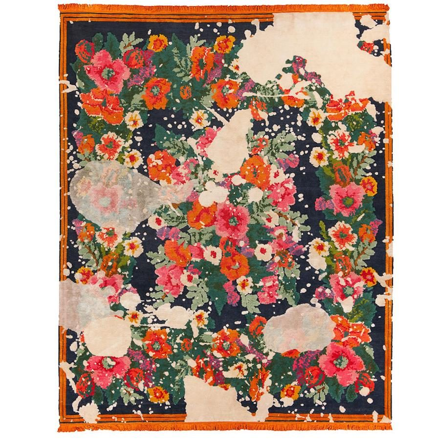
Textiles tejidos a mano de alta calidad, enfocados en fibras naturales y prácticas sostenibles.
Marca de moda ética y sostenible construida sobre prendas hechas a mano.
Mujeres rurales que tejen accesorios para el hogar con materiales naturales.
La idea que construí alrededor de esto es Threadly, "hilos atemporales": una marca que conecta directamente a las tejedoras tradicionales guatemaltecas con diseñadores contemporáneos, en lugar de dejar que cada lado trabaje por su cuenta. Los diseñadores acceden a una técnica real y una textura que no se puede falsificar digitalmente; las tejedoras consiguen trabajo más estable y un pago justo, en lugar de depender solo del turismo.
El plan se apoya en Cojolya, una cooperativa real de comercio justo de tejedoras mayas con sede en Santiago Atitlán, como fuente de artesanas calificadas, aunque nunca se llegó a establecer una alianza real; esto se quedó en la etapa de concepto.
Mantener vivas las técnicas tradicionales de tejido, con artesanas pagadas justamente por ello.
Diseño moderno y herramientas digitales aplicadas a una técnica tradicional, sin reemplazarla.
Principios de comercio justo y materiales ecológicos incorporados desde el inicio.
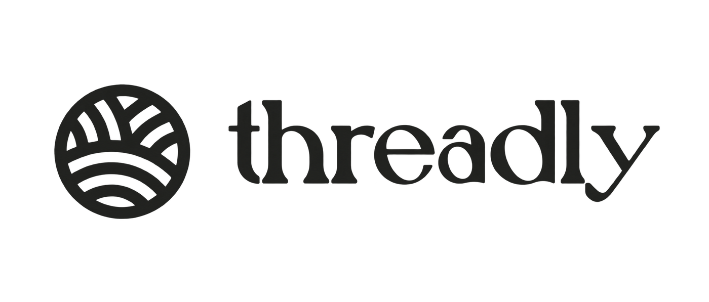
La prueba de concepto más clara que construí fue traducir una pintura real a una pieza tejida, trabajando con las limitaciones reales del tejido de cintura en lugar de solo describirlas en papel. La obra de origen fue "Contratulations, you are alive." de Raynar Rogers, una pieza abstracta vibrante en azul y amarillo que, para mí, se lee como el caos de la vida cotidiana.
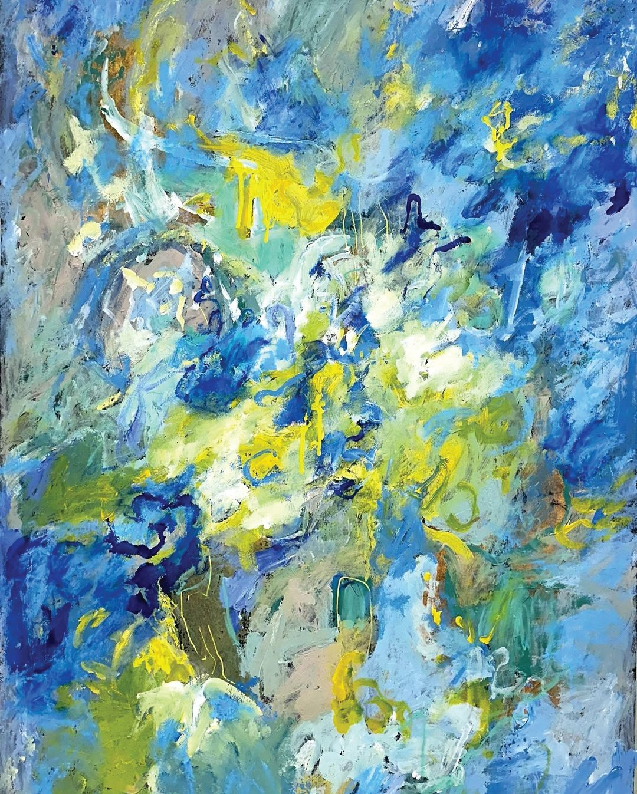
La pintura original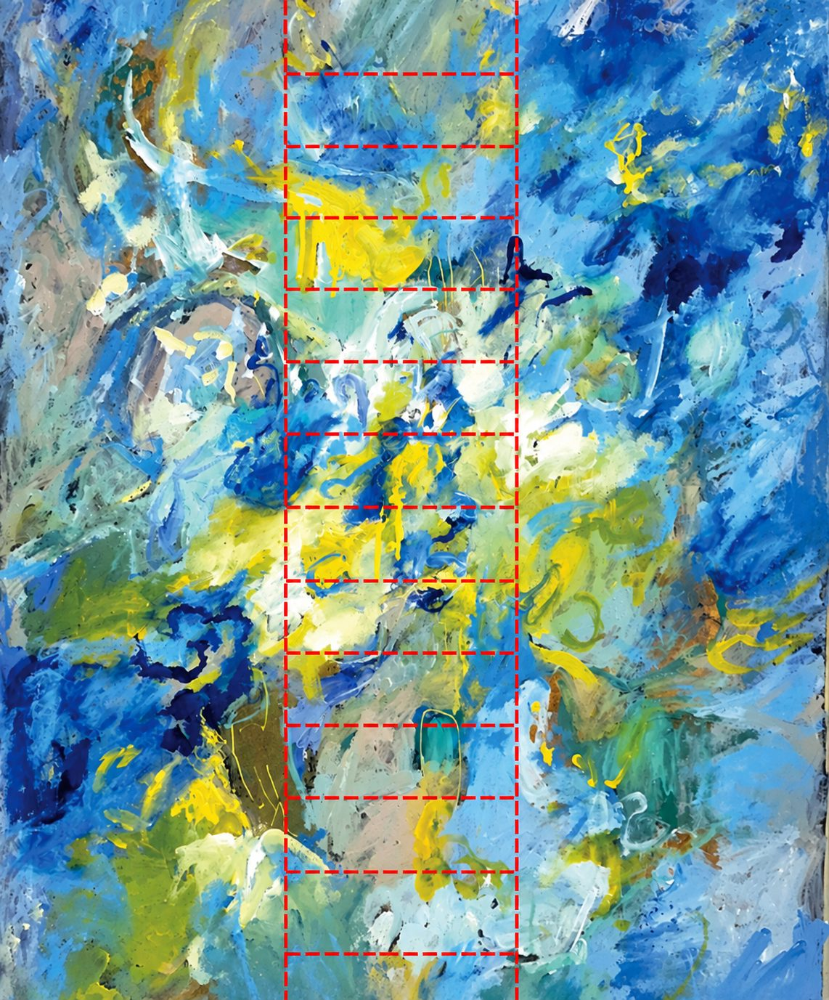
La única franja seleccionada para tejerEn realidad solo se podía tejer una franja angosta de la pintura, no la obra completa: el corte tiene ese ancho por límites físicos reales, el ancho del textil en sí y la cantidad de hilos que el telar realmente podía sostener.
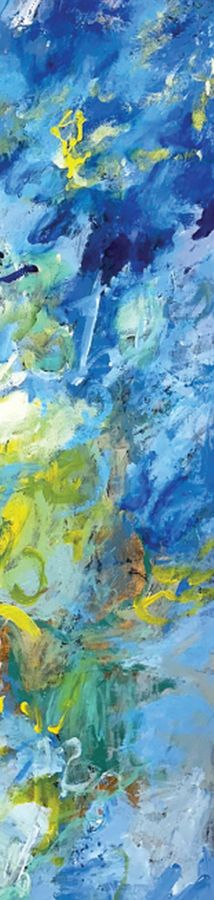
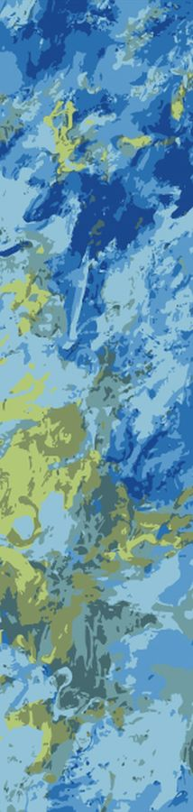
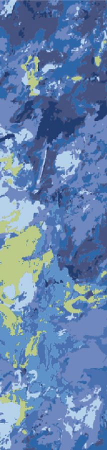
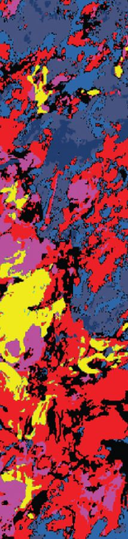
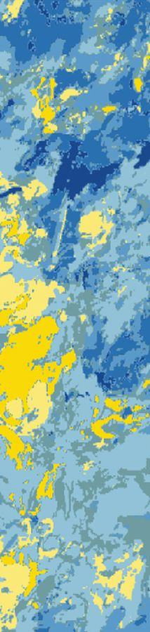
La pintura se eligió a propósito: la idea era un arte que funcionara más allá de la vista, con textura suficiente para poder leerse también con el tacto, de modo que alguien sin visión también pudiera experimentarlo.
Para poder entregarle esto realmente a una tejedora, el diseño completo se divide en 12 secciones, cada una del tamaño de una hoja A4 normal, impresas y usadas como guía página por página en lugar de una sola cuadrícula ilegible.
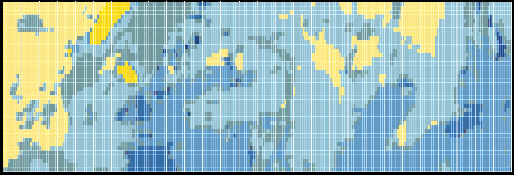
Dividido en 12, cuadriculado según el conteo real de hilos del telarEste es el producto real: una tabla de patrones página por página, con los colores ya asignados, que una tejedora puede seguir hilera por hilera sin necesidad de interpretar la pintura ella misma.
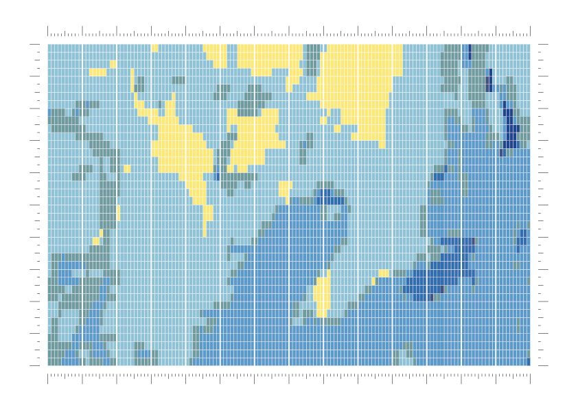
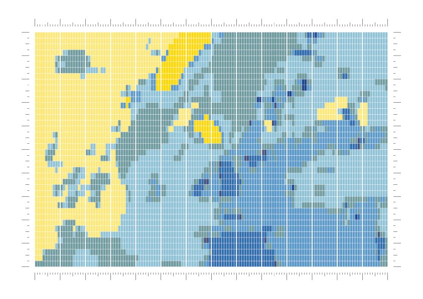
Monté y tejí la pieza yo mismo, desde urdir el telar hasta seguir mi propia guía hilera por hilera, para entender de verdad lo que le estaría pidiendo hacer a una artesana.
El proyecto en sí está terminado. El objetivo era entender el tejido de cintura lo suficientemente bien como para traducir yo mismo una pieza de arte contemporáneo a esta técnica, y luego documentar ese proceso con la claridad suficiente para que una tejedora tradicional pudiera tomarlo y seguirlo: la guía de nudos es ese documento, y está construido, probado y completo. Entregarle la guía a una artesana y que ella teja la pieza es un paso siguiente real, pero es una extensión de un proyecto terminado, no algo que le falte.
Threadly, el concepto de negocio, es una parte separada de esto: un plan real de salida al mercado que diseñé como parte del módulo de maestría, no una empresa lanzada. Nunca operó, no hubo ventas, no se firmó ninguna alianza con Cojolya, no se obtuvo ninguna certificación de comercio justo, y lo presento exactamente como lo que es: un intento real de pensar cómo una idea basada en un oficio artesanal podría funcionar como negocio.